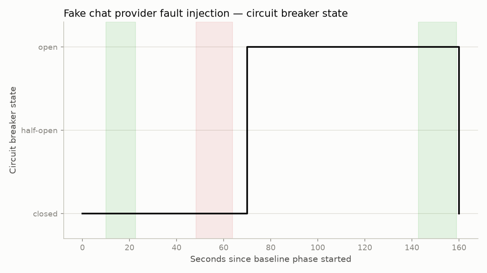

Guide · Capacity validation
Stress Test Report
Results from the stress-and-data-scale-validation roadmap feature: a
scaled-down local rehearsal of the platform's capacity claims, run against fake chat and
embedding providers with zero real external calls.
Scale disclosure
Run on a developer laptop (Intel i7-8650U, 8 threads, 15 GB RAM), not the documented reference hardware (8 vCPU / 32 GiB RAM / 500 GB SSD). It exercises the exact code paths the full-scale target would use, at a size that fits safely on one machine. Production capacity numbers cannot be claimed from this run alone — see what hardware this run actually needed.
Gateway latency under spike + soak load


Document ingestion throughput

Resource ceilings


Peak resource consumption, and what hardware this run actually needed
Per-container limits describe what each service is allowed to use. This answers a different question: at the single busiest moment, how much did the whole stack actually draw on this laptop? Computed by summing every container's live CPU% and memory at each matching timestamp, then taking the maximum:
| Metric | Peak value |
|---|---|
| Total CPU across every container | 509% ≈ 5.1 cores of this laptop's 8 |
| Total container memory | 2,509 MiB ≈ 2.5 GiB |
| Host available memory, low point | 5.15 GiB (abort floor was 1.5 GiB) |
What to actually buy, to replicate this specific rehearsal
Not the aspirational 8 vCPU / 32 GiB reference-hardware target above — that's
sized for the full 1M+ document roadmap target. This run's peak draw of ~5.1 cores and
~2.5 GiB maps, with headroom, to roughly an 8 vCPU / 8–16 GiB
compute-optimized instance — for example an AWS c6i.2xlarge, a GCP
c2-standard-8, or an equivalent 8 vCPU cloud instance. This workload is
CPU-bound, not memory-bound: a high-RAM tier would be wasted spend at this corpus size.
Fault tolerance

Scale used
| Parameter | Roadmap target | Used here |
|---|---|---|
| Accounts | 100k+ | 180 |
| Conversations | 5M+ | 720 |
| Documents uploaded | 1M+ | 2,160 |
| k6 spike | — | 40 VUs |
| k6 soak | — | 15 VUs, 90s |
Reproduction
./scripts.sh env
./scripts.sh install
./scripts.sh release up
infra/stress/sample_resources.sh trialscribe-release infra/stress/results/resource-samples.csv \
/tmp/stop-stress-sampler 5
uv run --frozen --package trialscribe-worker python infra/stress/seed_stress_corpus.py \
--accounts 180 --conversations-per-org 4 --documents-per-conversation 3 \
--out infra/stress/results/seed-summary.json
docker run --rm --network host -e BASE_URL=http://127.0.0.1:8000 \
-v "$(pwd)/infra/stress/stress.js:/scripts/stress.js:ro" \
-v "$(pwd)/infra/stress/results:/results" \
grafana/k6:2.2.0 run --summary-export /results/stress-summary.json /scripts/stress.js
touch /tmp/stop-stress-sampler
uv run --with matplotlib==3.11.2 python infra/stress/generate_stress_charts.py \
--out-dir docs/assets
./scripts.sh release down
Full methodology, root-cause analysis of the ingestion ceiling, and every reproduction
detail: the source report in docs/src/stress-test-report.md.